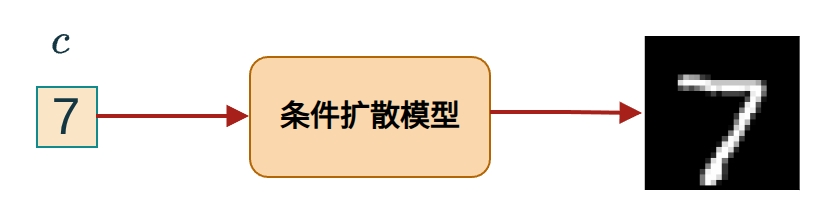
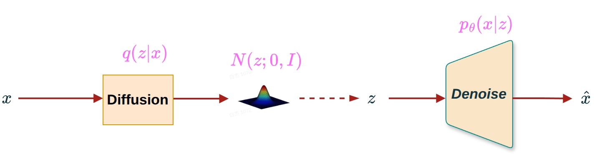
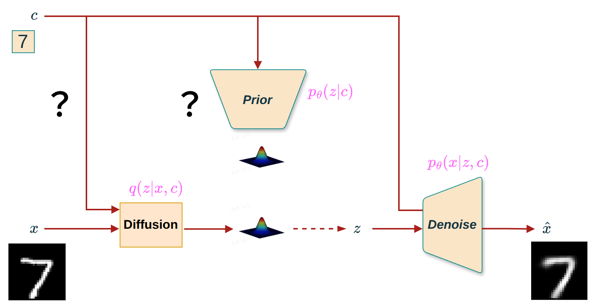
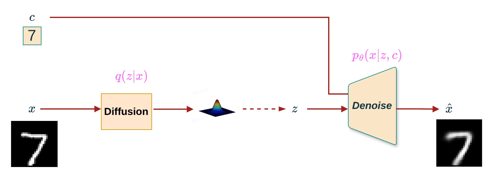
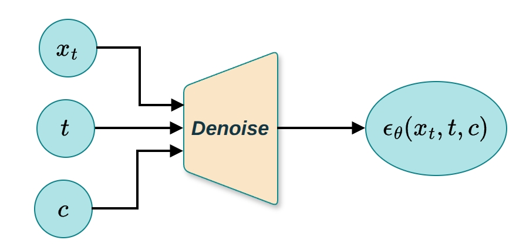
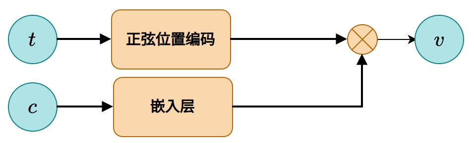

去噪扩散概率模型（DDPM）是一种强大的生成模型，它通过学习逐步去噪过程来生成高质量的数据样本。DDPM通过前向扩散过程将数据逐步转换为纯噪声，然后学习反向去噪过程从噪声中恢复数据。在生成新样本时，DDPM从标准正态分布 \(\mathcal{N}(0, I)\) 中采样初始噪声 \(x_T\)，然后通过训练好的去噪网络逐步去噪，最终生成新的数据样本。
然而，传统的DDPM在处理一些需要特定条件控制的生成任务时显得力不从心。具体来说:
无法控制生成内容:DDPM从标准正态分布随机采样初始噪声 \(x_T\)，生成的内容是完全随机的，无法指定生成特定类别的样本
在图像生成任务中，我们可能希望根据特定标签（如数字“7”）来生成相应的图像，而不是随机生成一个图像， 如图1所示。

图1 DDPM（无条件）vs CDDPM（条件生成）:通过指定条件标签，CDDPM可以生成特定类别的图像
为了增强DDPM的灵活性和可控性，提出了条件去噪扩散概率模型（Conditional Denoising Diffusion Probabilistic Model, CDDPM）。CDDPM允许我们在生成过程中加入额外的信息（条件），从而实现更加精确和可控的数据生成。
核心思想:在DDPM的基础上，引入条件变量 \(c\)，使得去噪过程依赖于条件信息。比如，可以通过指定条件变量 \(c\) 来指导模型生成特定类别的样本。
为了更好地理解DDPM和CDDPM的区别，我们先回顾一下DDPM的架构:

图2 DDPM架构:前向过程 \(q(x_t|x_{t-1})\) 添加噪声，反向过程 \(p_\theta(x_{t-1}|x_t)\) 去噪生成
我们先回顾一下CVAE的推导过程，我们当时提出了三个问题，在CDDPM中我们依旧需要回答这三个问题。
图3展示了条件c应该加在哪个部分的疑问:

图3 条件在CDDPM中的位置:条件是否应该加在前向过程和潜变量
不同于CVAE过程，由于CDDPM的前向过程（Diffusion过程）是个确定性过程，所以我们需要考虑条件c有没有必要加在前向过程？结论是没必要。以下过程给出了推导:
我们使用贝叶斯概率规则和条件概率分解，严格证明:在扩散模型中，前向过程与条件变量 \(c\) 无关，即:
\[\boxed{q(x_{1:T}|x_0, c) = q(x_{1:T}|x_0)}\]
设定与目标
贝叶斯视角下的推导
步骤 1:写出条件概率定义
根据条件概率公式:
\[q(x_{1:T}|x_0, c) = \frac{q(x_{1:T}, x_0, c)}{q(x_0, c)} \tag{2}\]
类似地:
\[q(x_{1:T}|x_0) = \frac{q(x_{1:T}, x_0)}{q(x_0)} \tag{3}\]
步骤 2:展开联合分布 \(q(x_{1:T}, x_0, c)\)
利用链式法则:
\[q(x_{1:T}, x_0, c) = q(c) \cdot q(x_0|c) \cdot q(x_{1:T}|x_0, c) \tag{4}\]
由马尔可夫性和假设 (1):
\[q(x_{1:T}|x_0, c) = \prod_{t=1}^T q(x_t|x_{t-1}, c) = \prod_{t=1}^T q(x_t|x_{t-1}) = q(x_{1:T}|x_0)\]
因此，联合分布可写为:
\[q(x_{1:T}, x_0, c) = q(c) \cdot q(x_0|c) \cdot q(x_{1:T}|x_0) \tag{5}\]
步骤 3:计算分母
显然:
\[q(x_0, c) = q(c) \cdot q(x_0|c) \tag{6}\]
步骤 4:代入贝叶斯公式
将 (5) 和 (6) 代入 (2):
\[q(x_{1:T}|x_0, c) = \frac{q(c) \cdot q(x_0|c) \cdot q(x_{1:T}|x_0)}{q(c) \cdot q(x_0|c)} = q(x_{1:T}|x_0) \tag{7}\]
✅ 得证！
结论
由于前向转移核满足 \(q(x_t|x_{t-1}, c) = q(x_t|x_{t-1})\)，整个轨迹分布与 \(c\) 无关，故:
\[\boxed{q(x_{1:T}|x_0, c) = q(x_{1:T}|x_0)}\]
这意味着:无论是否引入条件 \(c\)，前向扩散过程完全相同。条件信息仅用于反向去噪过程。
上述的证明过程同时说明了条件c与潜变量z是相互独立的，同时也就回答了问题2
因此，在CDDPM中，我们只需要将条件 \(c\) 加入到去噪网络 \(\epsilon_\theta(x_t, t, c)\) 中，而前向过程 \(q(x_t|x_{t-1})\) 保持不变。
所以CDDPM的框架图如图4所示:

图4 CDDPM框架:条件 \(c\) 仅注入到去噪网络 \(\epsilon_\theta(x_t, t, c)\)，前向过程保持不变
这个问题我们在CVAE解释过了，可以使用One-Hot编码和Embedding编码，在这里我们仅仅考虑Embedding编码，即
条件变量 \(c\) 需要编码成数值向量才能输入神经网络，常见的编码方式有:
方式2:Embedding编码 - 方法:使用可学习的嵌入层将类别索引映射为低维向量 - 例如:类别3 → 可学习的N维向量 - 优点:维度可自定义，通常比one-hot更紧凑；可以学习到类别之间的语义关系 - 缺点:需要额外的可学习参数
图5 条件编码方式:Embedding编码
在CDDPM中，我们新增了一个问题:条件c如何注入到去噪网络
不同于CVAE，CDDPM的Denoise过程的输入除了潜变量z，还有参数t, 如图6所示:

图6 CDDPM去噪网络的输入:除了潜变量 \(x_t\)，还有时间步 \(t\)，条件 \(c\) 需要注入到网络中
于是我们需要考虑条件c如何注入到去噪网络:
条件 \(c\) 编码后需要注入到去噪网络中，常见的注入方式有:
方式1:条件嵌入与时间嵌入相加 - 方法:将条件嵌入 \(emb(c)\) 与时间嵌入 \(emb(t)\) 相加，然后注入到网络的每个卷积块中 - 数学表达:\(v = emb(t) + emb(c)\)，然后 \(v\) 通过MLP后加到特征图 - 优点:实现简单，计算效率高 - 缺点:条件信息和时间信息混合，可能相互干扰
方式2:条件嵌入与时间嵌入拼接 - 方法:将条件嵌入和时间嵌入拼接后通过MLP - 数学表达:\(v = MLP([emb(t), emb(c)])\) - 优点:条件信息和时间信息分离，更灵活 - 缺点:需要更多的参数和计算
方式3:条件嵌入作为额外的输入通道 - 方法:将条件嵌入广播到图像空间维度，作为额外的输入通道 - 优点:条件信息在空间维度上可见 - 缺点:增加输入维度，计算开销较大
标准实现:条件嵌入与时间嵌入相加 - 这是最常用和高效的方式 - 在U-Net的每个卷积块中，条件嵌入和时间嵌入相加后通过MLP，然后加到特征图上

图7 条件注入方式:条件嵌入与时间嵌入相加后注入到U-Net的每个卷积块
在CDDPM中，我们需要最大化条件对数似然 \(\log p_\theta(x_0|c)\)。与DDPM类似，我们引入变分后验 \(q(x_{1:T}|x_0)\) 来近似真实后验。
条件对数似然: \[\log p_\theta(x_0|c) = \log \int p_\theta(x_{0:T}|c) dx_{1:T}\]
前向过程（固定，不依赖于条件）: \[q(x_{1:T}|x_0) = \prod_{t=1}^{T} q(x_t|x_{t-1}) = \prod_{t=1}^{T} \mathcal{N}(x_t; \sqrt{\alpha_t} x_{t-1}, (1-\alpha_t) I)\]
反向过程（依赖于条件）: \[p_\theta(x_{0:T}|c) = p(x_T) \prod_{t=1}^{T} p_\theta(x_{t-1}|x_t, c)\]
其中 \(p(x_T) = \mathcal{N}(x_T; 0, I)\)。
ELBO推导:
与DDPM类似，我们可以推导出条件ELBO:
\[\begin{aligned} \log p_\theta(x_0|c) &= \log \int \frac{p_\theta(x_{0:T}|c) q(x_{1:T}|x_0)}{q(x_{1:T}|x_0)} dx_{1:T} \\ &\geq \mathbb{E}_{q(x_{1:T}|x_0)} \left[\log \frac{p_\theta(x_{0:T}|c)}{q(x_{1:T}|x_0)}\right] \end{aligned}\]
展开后得到:
\[\begin{aligned} \mathcal{L}(x_0, c; \theta) &= \mathbb{E}_{q(x_1|x_0)} [\log p_\theta(x_0|x_1, c)] \\ &\quad - D_{KL}(q(x_T|x_0) \| p(x_T)) \\ &\quad - \sum_{t=2}^{T} \mathbb{E}_{q(x_t|x_0)} [D_{KL}(q(x_{t-1}|x_t, x_0) \| p_\theta(x_{t-1}|x_t, c))] \end{aligned}\]
ELBO的组成:
与DDPM类似，CDDPM的损失函数可以简化为预测噪声的均方误差:
简化损失函数:
\[\mathcal{L}_{CDDPM} = \mathbb{E}_{t, x_0, \epsilon, c} \left[ \|\epsilon - \epsilon_\theta(x_t, t, c)\|^2 \right]\]
其中:
关键变化:
与DDPM相比，CDDPM的损失函数只有一处关键变化: - 去噪网络:\(\epsilon_\theta(x_t, t, c)\) - 去噪网络依赖于条件 \(c\)
训练过程:
真实去噪步骤（与DDPM相同）: \[q(x_{t-1}|x_t, x_0) = \mathcal{N}(x_{t-1}; \tilde{\mu}_t(x_t, x_0), \tilde{\beta}_t I)\]
其中:
\[\tilde{\mu}_t(x_t, x_0) = \frac{\sqrt{\bar{\alpha}_{t-1}} \beta_t}{1 - \bar{\alpha}_t} x_0 + \frac{\sqrt{\alpha_t}(1 - \bar{\alpha}_{t-1})}{1 - \bar{\alpha}_t} x_t\]
\[\tilde{\beta}_t = \frac{1 - \bar{\alpha}_{t-1}}{1 - \bar{\alpha}_t} \beta_t\]
条件去噪步骤（依赖于条件）: \[p_\theta(x_{t-1}|x_t, c) = \mathcal{N}(x_{t-1}; \mu_\theta(x_t, t, c), \Sigma_\theta(x_t, t, c))\]
其中均值 \(\mu_\theta(x_t, t, c)\) 可以通过预测噪声 \(\epsilon_\theta(x_t, t, c)\) 计算:
\[\mu_\theta(x_t, t, c) = \frac{1}{\sqrt{\alpha_t}} \left( x_t - \frac{\beta_t}{\sqrt{1 - \bar{\alpha}_t}} \epsilon_\theta(x_t, t, c) \right)\]
方差 \(\Sigma_\theta(x_t, t, c)\) 通常设置为 \(\tilde{\beta}_t I\)（与DDPM相同）。
在CDDPM中，条件变量 \(c\) 起到以下关键作用:
核心思想:CDDPM中条件 \(c\) 的本质作用是改变去噪路径。
在DDPM中，去噪网络 \(\epsilon_\theta(x_t, t)\) 不依赖于条件，从相同的初始噪声 \(x_T\) 开始，总是沿着相同的去噪路径生成样本，无法控制生成的内容。
在CDDPM中，条件 \(c\) 改变了去噪路径:
DDPM: \[x_{t-1} = \frac{1}{\sqrt{\alpha_t}} \left( x_t - \frac{\beta_t}{\sqrt{1 - \bar{\alpha}_t}} \epsilon_\theta(x_t, t) \right) + \sigma_t z\]
去噪路径由 \(\epsilon_\theta(x_t, t)\) 决定，不依赖于条件。
CDDPM: \[x_{t-1} = \frac{1}{\sqrt{\alpha_t}} \left( x_t - \frac{\beta_t}{\sqrt{1 - \bar{\alpha}_t}} \epsilon_\theta(x_t, t, c) \right) + \sigma_t z\]
去噪路径由 \(\epsilon_\theta(x_t, t, c)\) 决定，依赖于条件 \(c\)，不同条件对应不同的去噪路径。
条件生成算法:
关键点: - 条件 \(c\) 在每一步去噪中都参与计算，引导去噪方向 - 从相同的 \(x_T\) 开始，不同条件 \(c\) 会生成不同的 \(x_0\)